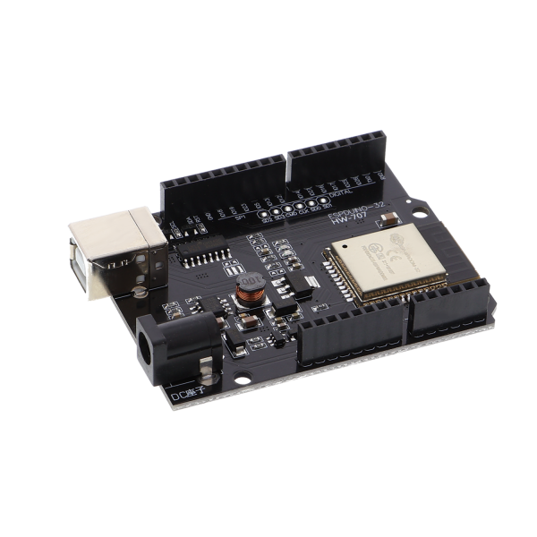
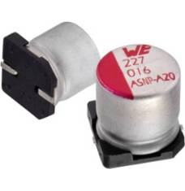
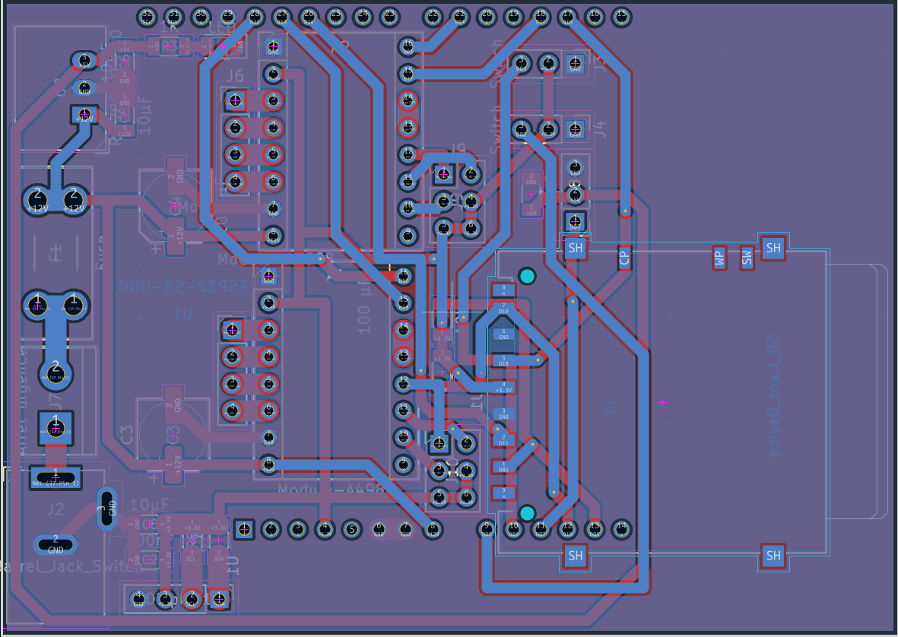

Architecture Électronique
Étude détaillée des composants, de la logique et du routage du PCB.
Le Cerveau et le Contrôle
Une architecture mécatronique typique séparant strictement la puissance de la logique.

Le Microcontrôleur ESP32-S3
Ce circuit a pour objectif de piloter un système motorisé complet (gestion de la puissance, contrôle des actionneurs, interface utilisateur).
Au cœur de notre conception, nous avons choisi d'utiliser un ESP32-S3 au format UNO. Ce choix est stratégique : il nous offre une grande puissance de calcul, de nombreuses broches (GPIO), et ouvre la porte à une connectivité sans fil très utile pour l'évolution du projet. Sa carte possède son propre petit régulateur interne qui a besoin de 5V en entrée pour générer le 3.3V.

Les Drivers de Moteurs (A4988)
Pour la partie opérative, le schéma met en évidence le contrôle des deux moteurs pas-à-pas de la machine via deux modules drivers A4988.
Ces drivers nous permettent un contrôle ultra-précis de la position. Des cavaliers (jumpers) sont prévus sur le circuit pour configurer la résolution des pas (le microstepping). Un connecteur (J8) est également prévu pour piloter le servomoteur de l'axe Z qui fonctionne en 5V.
Gestion de la Puissance et Sécurité (12V)
Distribution de l'énergie brute et protection matérielle.

L'Alimentation Principale (12V)
Notre système est alimenté en 12 volts via un connecteur de type "Barrel Jack". Cette tension brute est exclusivement réservée à la puissance pure et envoyée directement aux broches VMOT (Voltage Motor) des drivers A4988.
Pourquoi 12V ? Les moteurs pas-à-pas ont besoin d'une tension (et d'un courant) élevée pour générer un couple important (la force mécanique) et tourner rapidement. Si on les alimentait avec une tension plus basse, ils manqueraient cruellement de puissance.

Le Fusible Sacrificiel (F1)
Situé juste après l'entrée 12V (suivi d'un connecteur d'arrêt d'urgence), ce fusible est un composant de sécurité "sacrificiel" : son but est de "mourir" pour sauver la carte. Il a 3 utilités principales :
- Courts-circuits : Si un défaut majeur survient, le courant devient gigantesque. Le filament du fusible chauffe par effet Joule et fond instantanément pour couper le circuit.
- Protection financière : Si un moteur se bloque (calage), il consomme son courant maximum. Sans fusible, cette surintensité ferait brûler les drivers A4988 ou détruirait l'alimentation.
- Protection du PCB : Si un courant de 10 Ampères traverse la carte à cause d'un défaut, les pistes en cuivre agiraient comme des résistances chauffantes, décolleraient de la carte et brûleraient le circuit imprimé.
Conversion et Filtrage (5V)
Le 12V étant destructeur pour l'électronique standard, il faut l'abaisser intelligemment.

Le Régulateur à Découpage (U2)
Le modèle utilisé est un convertisseur abaisseur (Buck converter) R-78E5.0-1.0. Son but est de transformer le 12V en un 5V stable pour alimenter le Servomoteur et l'ESP32.
Le principe du hachage : Contrairement aux anciens régulateurs linéaires (comme le LM7805) qui dissipent l'excès de tension en chaleur, le U2 intègre un transistor qui s'ouvre et se ferme des centaines de milliers de fois par seconde pour "hacher" le 12V. Une bobine et un condensateur internes lissent ensuite cette tension. L'avantage : il convertit l'énergie avec plus de 90% d'efficacité. Puisqu'il ne dissipe presque pas d'énergie, il ne chauffe pas et n'a pas besoin de gros dissipateur thermique !

Les Condensateurs de Filtrage (C5 et C6)
Le régulateur est encadré par deux condensateurs externes de 10µF cruciaux pour la stabilité :
C5 (Condensateur d'entrée) : Il agit comme un petit réservoir tampon sur la ligne 12V. Lorsque le régulateur "hache" le courant, il crée des micro-appels d'énergie. Ce condensateur fournit cette énergie instantanément, évitant de perturber le reste de la ligne 12V.
C6 (Condensateur de sortie) : Il parfait le travail du régulateur. Il filtre les toutes dernières micro-variations (le "bruit" résiduel du hachage) pour garantir que l'ESP32 reçoive un 5V d'une propreté absolue, condition indispensable pour que le microcontrôleur ne plante pas.
La Logique 3.3V et les Protocoles de Communication
Distribution de la tension du "cerveau" et adaptation d'impédance via les résistances de Pull-Up.
La Tension Logique (3.3V)
L'ESP32-S3 fonctionne avec des signaux logiques de 3.3V (0V = état bas, 3.3V = état haut). Cette tension est générée par la carte ESP32 elle-même (broche 3V3) et distribuée à toute l'électronique de contrôle.
Elle alimente le lecteur de carte SD (VDD), l'affichage I2C, la tension de référence des drivers A4988 (broches VDD) et les résistances de pull-up pour les capteurs de fin de course. Attention : Envoyer du 5V ou du 12V sur les broches de données de l'ESP32 ou de la carte SD les grillerait instantanément.


Le bus I2C (Écran) : 4.7 kΩ
Les résistances R4 et R5 sont placées sur les lignes SDA et SCL de l'écran. L'I2C utilise un fonctionnement en "Drain ouvert" : les composants ne forcent jamais la ligne à 3.3V, ils la tirent à 0V pour "parler". Ce sont R4 et R5 qui ramènent la tension à 3.3V.
Pourquoi 4.7 kΩ ? Les pistes agissent comme de minuscules condensateurs (capacité parasite). Une résistance trop forte (ex: 100kΩ) mettrait trop de temps à remonter la tension, arrondissant le signal et rendant la vitesse floue. Trop faible (ex: 1kΩ), les puces surconsommeraient pour la tirer à 0V. 4.7 kΩ est le compromis idéal pour des signaux bien carrés à 100/400 kHz.

Le bus SPI (Carte SD) : 10 kΩ
La carte embarque un lecteur SD communiquant en SPI pour faire du datalogging. Le SPI "pousse" activement le courant. Les résistances R6 et R7 ne servent qu'à fixer un état par défaut (tirage faible / weak pull-up) pour que la ligne ne flotte pas et ne capte pas de parasites, tout en économisant l'énergie.
- R7 (Chip Select) : Maintient la broche à HIGH au démarrage pour empêcher la carte SD de s'activer de manière intempestive et d'interpréter des bruits.
- R6 (MISO) : Force un état HIGH propre lorsque la carte SD est inactive (haute impédance) pour que l'ESP32 ne lise pas de valeurs parasites.
Le Routage du Circuit Imprimé (PCB)
Le passage du schéma au monde physique avec KiCad.
La carte a été conçue sur deux couches : pistes rouges pour la couche supérieure (Top) et bleues pour la couche inférieure (Bottom). Lors du routage, plusieurs règles de l'art ont été respectées :
- Gestion des courants forts : Les pistes véhiculant le 12V et la masse générale, notamment vers les drivers A4988, sont significativement plus larges. Cela permet d'encaisser les pics de courant des moteurs sans échauffement.
- Découplage : Des condensateurs de 100µF ont été placés au plus près des drivers moteurs pour lisser la tension et absorber les appels de courant, protégeant ainsi l'électronique logique.
- Organisation spatiale : L'agencement sépare la zone de "puissance" (à gauche avec le jack, le fusible et le régulateur) de la zone de contrôle et d'interface (à droite avec le lecteur SD et l'ESP32).
